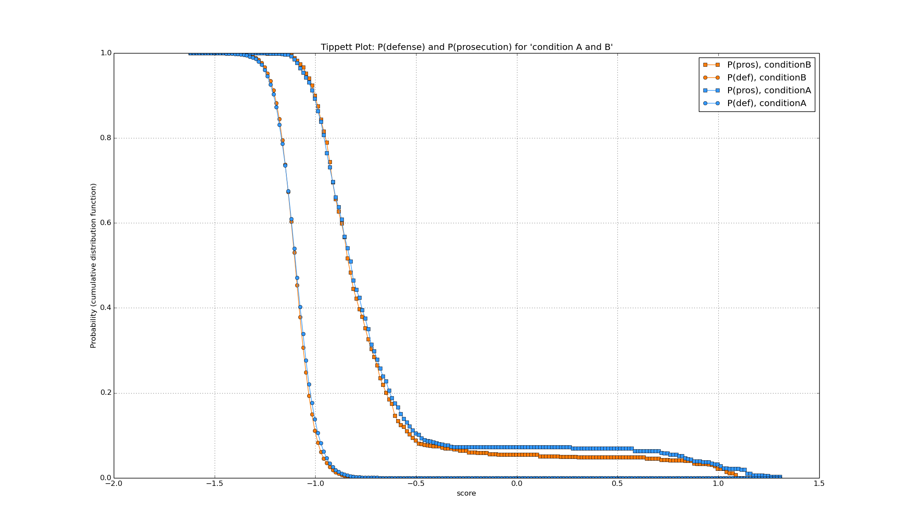

Will plot a tippet plot showing the odds of a false positive and false negative versus the raw scores. In order to draw the curves, the number of scores equal to or bigger than a threshold are counted. This is done for a number of threshold values. The number can be set via nrSamples4Probability in bioplot.cgf in section [probability]. The default is 250 steps.
